library(tidyverse)
# The CES data provided is in Stata format, so we need haven
library(haven)
# We need e1071 for kurtosis and skewness
library(e1071)
# We need kableExtra to produce nice html data tables
library(kableExtra)
# Read in the data, assign to df
df <- read_stata("2019 Canadian Election Study - Phone Survey v1.1.dta")Project 1
Project 1 - Exploring data from the 2019 Canadian Electio Study
In this project, we use data from the 2019 Canadian Election Study (CES) to produce an exploratory data analysis. We start with a univariate exploratory data analysis. Then we move to bivariate analysis. Data available here, or directly on the class website.
Section 1 is a code along. You just have to run the code. There’s no code to write. However, there are questions (marked QUESTION: in red) to answer. Answer them directly in the qmd file.
Do not start a new Quarto file from scratch. Work from the available Quarto file available on the website. Add inline text to answer the text in the qmd file.
In Section 2, I ask you to run the an analysis similar to the one in section 1, but on some other variables of your choice. You can pick any variables from the 2019 CES, or from another dataset if you prefer.
Project 1 is due on November 8. When you are done, knit this Quarto file to html. Submit both the html file and this .qmd (Quarto) file.
Section 1 - Exploring variables (code along)
Loading packages, loading the data
Use the glimpse function on the dataset.
glimpse(df)Rows: 4,021
Columns: 275
$ sample_id <dbl> 18, 32, 39, 59, 61, 69, 157, 158, 165, 167, 185…
$ survey_end_CES <chr> "2019-09-23 15:48:29-06", "2019-09-12 18:02:30-…
$ survey_end_month_CES <dbl> 9, 9, 9, 10, 9, 9, 9, 9, 9, 9, 9, 9, 9, 10, 9, …
$ survey_end_day_CES <dbl> 23, 12, 10, 10, 12, 17, 12, 14, 10, 12, 16, 12,…
$ num_attempts_CES <dbl> 5, 1, 1, 6, 1, 1, 1, 4, 1, 1, 4, 1, 9, 2, 1, 1,…
$ interviewer_id_CES <dbl> 161182, 151152, 161182, 147601, 151152, 2503, 2…
$ interviewer_gender_CES <chr> "Female", "Male", "Female", "Female", "Male", "…
$ language_CES <dbl+lbl> 2, 1, 2, 2, 2, 2, 2, 2, 2, 2, 2, 2, 2, 1, 2…
$ phonetype_CES <dbl+lbl> 2, 2, 2, 2, 2, 2, 2, 2, 2, 2, 2, 2, 2, 2, 2…
$ survey_end_PES <chr> "2019-11-08 14:24:14-07", "", "2019-11-09 13:08…
$ survey_end_month_PES <dbl+lbl> 11, NA, 11, NA, 11, 10, 10, 11, NA, 10, 11,…
$ survey_end_day_PES <dbl+lbl> 8, NA, 9, NA, 4, 28, 28, 7, NA, 25, 6,…
$ num_attempts_PES <dbl+lbl> 4, NA, 4, NA, 3, 1, 3, 3, NA, 0, 2,…
$ interviewer_id_PES <dbl+lbl> 2503, NA, 161182, NA, 164893, 2…
$ interviewer_gender_PES <chr> "Female", "", "Female", "", "Female", "Female",…
$ language_PES <dbl+lbl> 2, NA, 2, NA, 2, 2, 2, 2, NA, 2, 2,…
$ phonetype_PES <dbl+lbl> 2, NA, 2, NA, 2, 2, 2, 2, NA, NA, 2,…
$ mode_PES <dbl+lbl> 1, NA, 1, NA, 1, 1, 1, 1, NA, 2, 1,…
$ phone_type <dbl+lbl> 2, 2, 2, 3, 2, 2, 2, 3, 2, 3, 3, 3, 3, 2, 2…
$ weight_CES <dbl> 0.9019529, 0.9019529, 0.9019529, 1.2334642, 0.9…
$ weight_PES <dbl+lbl> 1.030709, NA, 1.030709, NA, 1.0…
$ c1 <dbl+lbl> 2, 2, 2, 2, 2, 2, 2, 2, 2, 2, 2, 2, 2, 2, 2…
$ c2a <dbl+lbl> NA, NA, NA, NA, NA, NA, NA, NA, NA, NA, NA,…
$ c3 <dbl+lbl> 1, 1, 1, 1, 1, 1, 1, 1, 1, 1, 1, 1, 1, 1, 1…
$ q1 <dbl+lbl> 1, 1, 1, 1, 1, 1, 1, 1, 1, 1, 1, 1, 1, 1, 1…
$ q2 <dbl+lbl> 1963, 1973, 1994, 2000, 1984, 1939, 1999, 1…
$ q3 <dbl+lbl> 1, 1, 1, 1, 1, 1, 1, 1, 1, 1, 1, 1, 1, 1, 2…
$ q4 <dbl+lbl> 5, 5, 5, 5, 5, 5, 5, 5, 5, 5, 5,…
$ q6 <dbl+lbl> 3, 2, 1, 2, 4, 3, 3, 2, 2, 2, 2, 2, 2, 3, 4…
$ q7 <chr> "economie", "Finances", "agriculture", "l'envir…
$ q8 <dbl+lbl> 1, 8, 3, 5, 3, 4, -9, 3, 2, 1, 6,…
$ q8_7_ <chr> "", "", "", "", "", "", "", "", "", "", "", "",…
$ q9 <dbl+lbl> 8, 10, 10, 6, 10, 10, 6, 8, 7, 7, 8,…
$ q10 <dbl+lbl> 1, 1, 1, 1, 1, 1, 2, 1, 1, 1, 1, 2, 1, 1, 3…
$ q11 <dbl+lbl> -9, -9, 1, 4, 3, 4, 5, 4, 2, -9, 6,…
$ q11_7_ <chr> "", "", "", "", "", "", "", "", "", "", "", "",…
$ q12 <dbl+lbl> -9, -9, NA, NA, NA, NA, NA, NA, NA, 1, NA,…
$ q12_7_ <chr> "", "", "", "", "", "", "", "", "", "", "", "",…
$ q13 <dbl+lbl> 2, 2, 2, 2, 4, 4, 4, 2, 3, 2, 3, 3, 2, 2, 1…
$ q14 <dbl+lbl> 60, 70, 70, 75, 10, 0, 50, 65, 50, 70, 15,…
$ q15 <dbl+lbl> 40, 55, 60, 40, 10, 30, 20, 25, 80, 10, 50,…
$ q16 <dbl+lbl> 40, 40, 55, 85, 90, 0, 70, 75, 10, 40, 20,…
$ q17 <dbl+lbl> 40, 10, 50, 80, 49, 100, 40, 80, 50…
$ q18 <dbl+lbl> 30, 40, 50, 75, 10, 30, 70, 75, 0, 0, 0,…
$ q19 <dbl+lbl> 10, 15, -6, 40, 0, 0, -6, 0, 0, -6, 95,…
$ q20 <dbl+lbl> 70, 50, 70, 70, 25, 0, 35, 70, 50, 70, 10,…
$ q21 <dbl+lbl> 40, 50, 40, 55, 25, 30, 35, 15, 80, 40, 30,…
$ q22 <dbl+lbl> 30, 45, 70, 90, 80, 0, 65, 80, -6, 60, 25,…
$ q23 <dbl+lbl> 50, 10, 80, 50, -9, 100, -6, 85, 50…
$ q24 <dbl+lbl> 70, 40, 60, 70, 40, 30, 50, 77, -6, 40, 10,…
$ q25 <dbl+lbl> 70, 15, 30, 50, 20, 0, -6, 5, 10, 40, 98,…
$ q27_a <dbl+lbl> NA, 3, 1, NA, 1, 3, 1, 1, 1, 1, 1,…
$ q27_b <dbl+lbl> 3, 1, 1, 1, 1, 1, 1, 1, 1, 1, 3, 1, 1, 1, 1…
$ q27_c <dbl+lbl> 3, 3, 1, 3, 1, 3, 3, -8, 1, 3, 1,…
$ q27_d <dbl+lbl> 3, 3, 3, 2, 1, 3, 2, 2, 3, 3, 3,…
$ q27_e <dbl+lbl> 2, 3, 3, 1, 3, 2, 3, 1, 3, 3, 3, 1, 3, 1, 2…
$ q31 <dbl+lbl> 2, 3, 1, 3, 1, 2, -9, 1, 3, 3, 2,…
$ q32 <dbl+lbl> 3, 3, 1, 1, 2, 2, 1, 1, 3, 3, 2,…
$ q33 <dbl+lbl> 1, 2, 1, 1, 3, 2, 2, 1, 2, 1, 6,…
$ q33_7_ <chr> "", "", "", "", "", "", "", "", "", "", "", "",…
$ q34 <dbl+lbl> 5, 1, 5, 5, 3, -9, 5, 5, -8, 1, 6,…
$ q34_7_ <chr> "", "", "", "", "", "", "", "", "", "", "", "",…
$ q35 <dbl+lbl> 1, 2, 1, 1, 1, 2, 3, 1, 2, 1, 2,…
$ q35_7_ <chr> "", "", "", "", "", "", "", "", "", "", "", "",…
$ q36 <dbl+lbl> 2, 1, 2, 2, 2, 1, 5, 2, 1, 3, 1,…
$ q36_7_ <chr> "", "", "", "", "", "", "", "", "", "", "", "",…
$ q37 <dbl+lbl> 1, 1, 1, 3, 1, 4, 5, 1, 1, 1, 6,…
$ q37_7_ <chr> "", "", "", "", "", "", "", "", "", "", "", "",…
$ q38 <dbl+lbl> 2, 2, 2, 1, 2, 1, 3, 3, 2, 2, 2,…
$ q38_7_ <chr> "", "", "", "", "", "", "", "", "", "", "", "",…
$ q39 <dbl+lbl> 3, 1, 3, 1, 3, 2, 3, 1, 3, 3, 3, 3, 3, 3, 2…
$ q40 <dbl+lbl> 3, 3, 3, 1, 1, 3, 3, 1, 3, 3, 3, 3, 3, 1, 3…
$ q75 <dbl+lbl> 3, 3, 3, 5, 4, 4, 2, 4, 3, 4, 4,…
$ q44 <dbl+lbl> 3, 3, 4, 2, 6, 5, 2, 5, 5, 5, 6, 2, 3, 5, 1…
$ q76 <dbl+lbl> 1, 1, 1, 1, 1, 1, 1, 1, 1, 3, 1, 2, 1, 1, 2…
$ q45 <dbl+lbl> 2, 1, 1, 1, 1, 2, 2, 1, 2, 1, 1, 2, 1, 2, 2…
$ q46 <dbl+lbl> 3, 3, 3, 2, 4, 4, 4, 3, 2, 2, 2,…
$ q47 <dbl+lbl> 3, 3, 3, 1, 3, 3, 3, 3, 2, 1, 3, 1, 3, 1, 2…
$ q48 <dbl+lbl> 1, 1, 1, 1, 1, 1, 1, 1, 1, 3, 1, 4, 1, 1, 3…
$ q49 <dbl+lbl> 4, 4, 4, 4, 1, 1, 4, 1, 4, 3, 4, 4, 4, 4, 4…
$ q52 <dbl+lbl> 1, 1, 3, 3, 3, 4, 3, 8, 2, 1, 6, 4, 2, 8, 8…
$ q52_7_ <chr> "", "", "", "", "", "", "", "", "", "", "", "",…
$ q53 <dbl+lbl> 2, 2, 2, 2, 2, 2, 3, NA, 2, 3, 2,…
$ q54 <dbl+lbl> 2, 2, 2, 3, 2, 1, 2, 3, 1, 1, 2,…
$ q59 <dbl+lbl> 1, 1, 1, 3, 1, 1, 3, 1, 1, 1, 1, 2, 1, 1, 2…
$ q60 <dbl+lbl> 1, 1, 3, NA, 3, -9, NA, 4, 1, 1, 2,…
$ q60_7_ <chr> "", "", "", "", "", "", "", "", "", "", "", "",…
$ q77 <dbl+lbl> NA, NA, NA, NA, NA, NA, NA, NA, NA, NA, NA,…
$ q43 <dbl+lbl> 2, 4, 3, 2, 3, 1, 3, 1, 2, 3, 4,…
$ q61 <dbl+lbl> 9, 8, 9, 8, 10, 4, 6, 10, 4, 7, 11,…
$ q62 <dbl+lbl> 6, 6, 21, 21, 21, 6, 22, 21, 6, 6, 6,…
$ q62_22_ <chr> "", "", "", "", "", "", "Beisme", "", "", "", "…
$ q63 <dbl+lbl> 1, 3, NA, NA, NA, 3, 4, NA, 2, 2, 1,…
$ q64 <dbl+lbl> 2, 2, 2, 2, 2, 2, 2, 2, 2, 2, 2,…
$ q64_13_ <chr> "", "", "", "", "", "", "", "", "", "", "", "",…
$ q65 <dbl+lbl> NA, NA, NA, NA, NA, NA, NA, …
$ q66a_1 <dbl+lbl> 0, 0, 0, 0, 0, -9, 0, 0, 1, 0, 1,…
$ q66a_2 <dbl+lbl> 0, 0, 0, 0, 0, -9, 0, 0, 0, 0, 0,…
$ q66a_3 <dbl+lbl> 0, 0, 0, 0, 0, -9, 0, 0, 0, 0, 0,…
$ q66a_4 <dbl+lbl> 0, 0, 0, 0, 0, -9, 0, 0, 0, 0, 0,…
$ q66a_5 <dbl+lbl> 0, 0, 1, 0, 0, -9, 1, 1, 0, 0, 0,…
$ q66a_6 <dbl+lbl> 0, 0, 0, 0, 0, -9, 0, 0, 0, 0, 0,…
$ q66a_7 <dbl+lbl> 0, 0, 0, 0, 0, -9, 0, 0, 0, 0, 0,…
$ q66a_8 <dbl+lbl> 0, 0, 0, 0, 0, -9, 0, 0, 0, 0, 0,…
$ q66a_9 <dbl+lbl> 0, 0, 0, 0, 0, -9, 0, 0, 0, 0, 0,…
$ q66a_10 <dbl+lbl> 0, 0, 0, 0, 0, -9, 0, 0, 0, 0, 0,…
$ q66a_11 <dbl+lbl> 0, 0, 0, 0, 0, -9, 0, 0, 0, 0, 0,…
$ q66a_12 <dbl+lbl> 0, 1, 0, 0, 0, -9, 0, 0, 0, 0, 0,…
$ q66a_13 <dbl+lbl> 0, 0, 0, 0, 0, -9, 0, 0, 0, 0, 0,…
$ q66a_14 <dbl+lbl> 1, 0, 0, 0, 0, -9, 0, 0, 0, 0, 0,…
$ q66a_15 <dbl+lbl> 0, 0, 0, 0, 1, -9, 0, 0, 0, 0, 0,…
$ q66a_16 <dbl+lbl> 0, 0, 0, 0, 0, -9, 0, 0, 0, 1, 0,…
$ q66a_17 <dbl+lbl> 0, 0, 0, 1, 0, -9, 1, 0, 0, 0, 0,…
$ q66a_17_ <chr> "", "", "", "colon français, autochtone, canadi…
$ q66_1 <dbl+lbl> NA, NA, NA, NA, NA, NA, NA, NA, -9, NA, 0,…
$ q66_3 <dbl+lbl> NA, NA, NA, NA, NA, NA, NA, NA, -9, NA, 0,…
$ q66_4 <dbl+lbl> NA, NA, NA, NA, NA, NA, NA, NA, -9, NA, 0,…
$ q66_5 <dbl+lbl> NA, NA, NA, NA, NA, NA, NA, NA, -9, NA, 0,…
$ q66_6 <dbl+lbl> NA, NA, NA, NA, NA, NA, NA, NA, -9, NA, 0,…
$ q66_7 <dbl+lbl> NA, NA, NA, NA, NA, NA, NA, NA, -9, NA, 0,…
$ q66_8 <dbl+lbl> NA, NA, NA, NA, NA, NA, NA, NA, -9, NA, 0,…
$ q66_9 <dbl+lbl> NA, NA, NA, NA, NA, NA, NA, NA, -9, NA, 0,…
$ q66_10 <dbl+lbl> NA, NA, NA, NA, NA, NA, NA, NA, -9, NA, 0,…
$ q66_11 <dbl+lbl> NA, NA, NA, NA, NA, NA, NA, NA, -9, NA, 0,…
$ q66_12 <dbl+lbl> NA, NA, NA, NA, NA, NA, NA, NA, -9, NA, 0,…
$ q66_13 <dbl+lbl> NA, NA, NA, NA, NA, NA, NA, NA, -9, NA, 0,…
$ q66_14 <dbl+lbl> NA, NA, NA, NA, NA, NA, NA, NA, -9, NA, 0,…
$ q66_15 <dbl+lbl> NA, NA, NA, NA, NA, NA, NA, NA, -9, NA, 1,…
$ q66_16 <dbl+lbl> NA, NA, NA, NA, NA, NA, NA, NA, -9, NA, 0,…
$ q66_17 <dbl+lbl> NA, NA, NA, NA, NA, NA, NA, NA, -9, NA, 0,…
$ q66_18 <dbl+lbl> NA, NA, NA, NA, NA, NA, NA, NA, -9, NA, 0,…
$ q66_18_ <chr> "", "", "", "", "", "", "", "", "", "", "", "",…
$ q67 <dbl+lbl> 4, 1, 4, 4, 4, 4, 4, 4, 4, 4, 4,…
$ q67_31_ <chr> "", "", "", "", "", "", "", "", "", "", "", "",…
$ q68 <dbl+lbl> 1, 1, 6, 9, 1, 4, 6, 1, 8, 1, 1,…
$ q68_12_ <chr> "", "", "", "", "", "", "", "", "", "", "", "",…
$ q69 <dbl+lbl> 104000, 75000, 20000, 120000, 95000, 38…
$ q70 <dbl+lbl> NA, NA, NA, NA, NA, NA, NA, NA, NA, NA, 4,…
$ q71 <dbl+lbl> 2, 4, 1, 5, 1, 1, 1, 2, 2, 4, 3, 5, 3, 2, 4…
$ q26a <dbl+lbl> 2, 2, 2, 1, 2, 2, 2, 1, 2, 1, 1, 1, 1, 2, 2…
$ q26b <dbl+lbl> NA, NA, NA, NA, NA, NA, NA, NA, NA, NA, NA,…
$ r1 <dbl+lbl> 1, 2, 2, 2, 1, 1, 1, 1, 1, 2, 1, 2, 2, 2, 1…
$ age <dbl> 56, 46, 25, 19, 35, 80, 20, 24, 56, 49, 41, 20,…
$ age_range <dbl+lbl> 5, 4, 2, 1, 3, 5, 1, 1, 5, 4, 3, 1, 5, 4, 2…
$ q71r <dbl+lbl> 2, 4, 1, 5, 1, 1, 1, 2, 2, 4, 3, 5, 3, 2, 4…
$ q70r <dbl+lbl> 5, 4, 2, 6, 5, 3, 6, 3, 3, 7, 4,…
$ q14r <dbl+lbl> 3, 4, 4, 4, 1, 1, 3, 4, 3, 4, 1, 2, 3, 3, 5…
$ q15r <dbl+lbl> 2, 3, 3, 2, 1, 2, 1, 2, 4, 1, 3,…
$ q16r <dbl+lbl> 2, 2, 3, 5, 5, 1, 4, 4, 1, 2, 1, 1, 2, 4, 7…
$ q17r <dbl+lbl> 2, 1, 3, 4, 3, 5, 2, 4, 3, 4, 1,…
$ q18r <dbl+lbl> 2, 2, 3, 4, 1, 2, 4, 4, 1, 1, 1,…
$ q19r <dbl+lbl> 1, 1, 7, 2, 1, 1, 7, 1, 1, 7, 5, 2, 2, 1, 7…
$ q20r <dbl+lbl> 4, 3, 4, 4, 2, 1, 2, 4, 3, 4, 1, 1, 3, 3, 3…
$ q21r <dbl+lbl> 2, 3, 2, 3, 2, 2, 2, 1, 4, 2, 2, 2, 3, 1, 7…
$ q22r <dbl+lbl> 2, 3, 4, 5, 4, 1, 4, 4, 7, 3, 2, 1, 2, 5, 7…
$ q23r <dbl+lbl> 3, 1, 4, 3, 6, 5, 7, 5, 3, 7, 1,…
$ q24r <dbl+lbl> 4, 2, 3, 4, 2, 2, 3, 4, 7, 2, 1, 3, 7, 4, 4…
$ q25r <dbl+lbl> 4, 1, 2, 3, 1, 1, 7, 1, 1, 2, 5, 3, 3, 1, 2…
$ vote <dbl+lbl> 11, 11, 1, 4, 3, 4, 5, 4, 2, 1, 6,…
$ q77eng <dbl+lbl> NA, NA, NA, 2, NA, NA, NA, NA, NA, NA, NA,…
$ q77fr <dbl+lbl> NA, NA, NA, NA, NA, NA, NA, NA, NA, NA, NA,…
$ pc1 <dbl+lbl> 1, NA, 1, NA, 1, 1, 1, 1, NA, 1, 1,…
$ p1 <chr> "l'écologie", "", "laicité", "", "L'environneme…
$ p2 <dbl+lbl> 1, NA, 1, NA, 1, 1, 2, 1, NA, 1, 1,…
$ p3 <dbl+lbl> 1, NA, 4, NA, 3, 4, NA, 3, NA, 4, 6,…
$ p3_7_ <chr> "", "", "", "", "", "", "", "", "", "", "", "",…
$ p4 <dbl+lbl> 2, NA, 1, NA, 4, 2, 3, 3, NA, 2, 1,…
$ p5 <dbl+lbl> 2, NA, 2, NA, 3, 4, 3, 2, NA, 2, 2,…
$ p6 <dbl+lbl> 2, NA, 6, NA, 0, 3, 2, 2, NA, 4, 6,…
$ p7 <dbl+lbl> 9, NA, 7, NA, 1, 4, 5, 5, NA, 8, 5,…
$ p8 <dbl+lbl> 2, NA, 8, NA, 9, 0, 8, 9, NA, 4, 4,…
$ p9 <dbl+lbl> 6, NA, 7, NA, 8, 1, 7, 5, NA, 0, 0,…
$ p10 <dbl+lbl> 7, NA, 8, NA, 7, 10, 5, 7, NA, 9, 2,…
$ p11 <dbl+lbl> 1, NA, 4, NA, 0, 0, 11, 0, NA, 0, 8,…
$ p12 <dbl+lbl> 2, NA, 5, NA, 0, 4, 2, 0, NA, 5, 4,…
$ p13 <dbl+lbl> 9, NA, 6, NA, 0, 5, 4, 6, NA, 7, 4,…
$ p14 <dbl+lbl> 7, NA, 7, NA, 9, 5, 7, 9, NA, 7, 5,…
$ p15 <dbl+lbl> 6, NA, 5, NA, 8, 0, 9, 3, NA, 0, 1,…
$ p16 <dbl+lbl> 7, NA, 8, NA, 10, 8, 11, 9, NA, 9, 2,…
$ p17 <dbl+lbl> 8, NA, 4, NA, 0, 0, 11, 0, NA, 0, 8,…
$ p18 <dbl+lbl> 1, NA, 1, NA, 3, 1, 3, 1, NA, 3, 3,…
$ p19 <dbl+lbl> 3, NA, 3, NA, 3, -9, 3, 3, NA, 1, 2,…
$ p20_a <dbl+lbl> 4, NA, 5, NA, 5, 1, 5, 5, NA, 4, 3,…
$ p20_b <dbl+lbl> 5, NA, 4, NA, 5, 3, 3, 5, NA, 2, 4,…
$ p20_c <dbl+lbl> 1, NA, 1, NA, 1, 1, 1, 2, NA, 1, 1,…
$ p20_d <dbl+lbl> 1, NA, 1, NA, 2, 1, 3, 1, NA, 2, 3,…
$ p20_e <dbl+lbl> 3, NA, 5, NA, 5, 4, 5, 5, NA, 5, 5,…
$ p20_f <dbl+lbl> 4, NA, 4, NA, 2, 1, 2, 5, NA, 3, 4,…
$ p20_g <dbl+lbl> 2, NA, 2, NA, 1, 1, 2, 1, NA, 3, 2,…
$ p20_h <dbl+lbl> 5, NA, 4, NA, 5, 1, 4, 5, NA, 2, 4,…
$ p20_i <dbl+lbl> 4, NA, 4, NA, 1, 4, 4, 4, NA, 2, 4,…
$ p20_j <dbl+lbl> 4, NA, 2, NA, 4, 4, 4, 3, NA, 4, 2,…
$ p20_k <dbl+lbl> 4, NA, 4, NA, 3, 3, 4, 5, NA, 3, 4,…
$ p20_l <dbl+lbl> 3, NA, 5, NA, 4, 2, 2, 3, NA, 4, 5,…
$ p20_m <dbl+lbl> 2, NA, 4, NA, 2, 1, 2, 2, NA, 2, 4,…
$ p20_n <dbl+lbl> 4, NA, 4, NA, 1, 1, 3, 3, NA, 1, 4,…
$ p21_a <dbl+lbl> 1, NA, 2, NA, 2, 1, 4, 4, NA, 1, 2,…
$ p21_b <dbl+lbl> 5, NA, 4, NA, 4, 1, 4, 3, NA, 3, 3,…
$ p22_a <dbl+lbl> 2, NA, 1, NA, 2, 2, 2, 1, NA, 2, 2,…
$ p22_b <dbl+lbl> 4, NA, 4, NA, 4, 1, 4, 5, NA, 1, 5,…
$ p22_c <dbl+lbl> 4, NA, 4, NA, 3, 3, 4, 5, NA, 3, 5,…
$ p23 <dbl+lbl> 1, NA, 1, NA, 1, 1, 1, 1, NA, 1, 2,…
$ p24 <dbl+lbl> 1, NA, 3, NA, 3, 4, 3, 3, NA, 4, NA,…
$ p24_7_ <chr> "", "", "", "", "", "", "", "", "", "", "", "",…
$ p25_a <dbl+lbl> 2, NA, 4, NA, 3, 3, 2, 4, NA, 2, 4,…
$ p25_b <dbl+lbl> 2, NA, 4, NA, 4, 1, 3, 4, NA, 2, 4,…
$ p25_c <dbl+lbl> 1, NA, 1, NA, 1, 1, 1, 2, NA, 1, 2,…
$ p25_d <dbl+lbl> 1, NA, 2, NA, 2, 2, 3, 3, NA, 1, 2,…
$ p26 <dbl+lbl> 2, NA, 3, NA, 1, 1, 3, 3, NA, 1, 3,…
$ p27 <dbl+lbl> 8, NA, 9, NA, 10, 7, 6, 9, NA, 6, 9,…
$ p28 <dbl+lbl> 2, NA, 1, NA, 1, 1, 3, 1, NA, 3, 2,…
$ p29_a <dbl+lbl> 4, NA, 3, NA, 4, 1, 4, 4, NA, 1, 1,…
$ p29_b <dbl+lbl> 1, NA, 1, NA, 3, 1, 1, 1, NA, 1, 1,…
$ p29_c <dbl+lbl> 2, NA, 3, NA, 3, 1, 1, 2, NA, 1, 1,…
$ p30 <dbl+lbl> 3, NA, 3, NA, 3, 3, 3, 3, NA, 3, 3,…
$ p31 <dbl+lbl> 2, NA, 1, NA, 1, 2, 2, 1, NA, 2, 2,…
$ p32 <dbl+lbl> 3, NA, 2, NA, 3, 2, 4, 2, NA, 3, 3,…
$ p33 <dbl+lbl> 4, NA, 5, NA, 4, 3, 4, 2, NA, 1, 4,…
$ p34 <dbl+lbl> 4, NA, 5, NA, 1, 4, 5, 2, NA, 5, 5,…
$ p35_a <dbl+lbl> 3, NA, 3, NA, 3, 5, 2, 1, NA, 3, 3,…
$ p35_b <dbl+lbl> 3, NA, 2, NA, 1, 5, 2, 1, NA, 1, 3,…
$ p35_c <dbl+lbl> 3, NA, 2, NA, 3, 5, 3, 1, NA, 1, 3,…
$ p36 <dbl+lbl> 8, NA, 4, NA, 8, 12, 7, 5, NA, 5, 5,…
$ p37 <dbl+lbl> 7, NA, 7, NA, 9, 12, 9, 7, NA, 7, 6,…
$ p38 <dbl+lbl> 7, NA, 2, NA, 3, 12, 4, 3, NA, 3, 4,…
$ p39 <dbl+lbl> 4, NA, 4, NA, 4, 12, 11, 4, NA, 8, 2,…
$ p40 <dbl+lbl> 3, NA, 2, NA, 4, 12, 3, 5, NA, 7, 5,…
$ p41 <dbl+lbl> 7, NA, 10, NA, 10, 12, 5, 9, NA, 11, 8,…
$ p42 <dbl+lbl> 7, NA, 4, NA, 0, 12, 4, 1, NA, 7, 5,…
$ p43 <dbl+lbl> 3, NA, 3, NA, 5, 1, 1, 2, NA, 1, 2,…
$ p44 <dbl+lbl> 2, NA, 1, NA, 1, 1, 3, 1, NA, 1, 3,…
$ p45 <dbl+lbl> 2, NA, 2, NA, 1, 2, 2, 2, NA, 2, 2,…
$ p46 <dbl+lbl> 2, NA, 2, NA, NA, 1, 1, 1, NA, 2, 1,…
$ p47 <dbl+lbl> NA, NA, NA, NA, 3, 4, 3, 3, NA, NA, 6,…
$ p47_7_ <chr> "", "", "", "", "", "", "", "", "", "", "", "",…
$ p48 <dbl+lbl> NA, NA, NA, NA, 1, 1, 2, 2, NA, NA, 2,…
$ p49 <dbl+lbl> 6, NA, 7, NA, 12, 7, 11, 6, NA, 2, 7,…
$ p50 <dbl+lbl> 1, NA, 6, NA, 6, 5, 6, 6, NA, 1, 2,…
$ p51 <dbl+lbl> 2, NA, 2, NA, 1, 2, 1, 2, NA, 2, 2,…
$ p52 <chr> "Gestionnaire dans le domaine funéraire", "", "…
$ p53 <dbl+lbl> 3, NA, NA, NA, 1, NA, NA, -9, NA, 1, 2,…
$ p54 <dbl+lbl> 7, NA, 1, NA, 1, 1, 1, 3, NA, 2, 5,…
$ p55 <dbl+lbl> 2, NA, 2, NA, 2, 2, 2, 2, NA, 2, 2,…
$ p56_1 <dbl+lbl> 0, NA, 0, NA, 0, 0, 0, 0, NA, 0, 0,…
$ p56_2 <dbl+lbl> 1, NA, 1, NA, 1, 1, 1, 1, NA, 1, 1,…
$ p56_3 <dbl+lbl> 0, NA, 0, NA, 0, 0, 0, 0, NA, 0, 0,…
$ p56_4 <dbl+lbl> 0, NA, 0, NA, 0, 0, 0, 0, NA, 0, 0,…
$ p56_5 <dbl+lbl> 0, NA, 0, NA, 0, 0, 0, 0, NA, 0, 0,…
$ p56_6 <dbl+lbl> 0, NA, 0, NA, 0, 0, 0, 0, NA, 0, 0,…
$ p56_7 <dbl+lbl> 0, NA, 0, NA, 0, 0, 0, 0, NA, 0, 0,…
$ p56_8 <dbl+lbl> 0, NA, 0, NA, 0, 0, 0, 0, NA, 0, 0,…
$ p56_9 <dbl+lbl> 0, NA, 0, NA, 0, 0, 0, 0, NA, 0, 0,…
$ p56_9_ <chr> "", "", "", "", "", "", "", "", "", "", "", "",…
$ p57 <dbl+lbl> 5, NA, 5, NA, 5, 5, 5, 5, NA, 3, 1,…
$ p6r <dbl+lbl> 2, NA, 6, NA, 0, 3, 2, 2, NA, 4, 6,…
$ p7r <dbl+lbl> 9, NA, 7, NA, 1, 4, 5, 5, NA, 8, 5,…
$ p8r <dbl+lbl> 2, NA, 8, NA, 9, 0, 8, 9, NA, 4, 4,…
$ p9r <dbl+lbl> 6, NA, 7, NA, 8, 1, 7, 5, NA, 0, 0,…
$ p10r <dbl+lbl> 7, NA, 8, NA, 7, 10, 5, 7, NA, 9, 2,…
$ p11r <dbl+lbl> 1, NA, 4, NA, 0, 0, -9, 0, NA, 0, 8,…
$ p12r <dbl+lbl> 2, NA, 5, NA, 0, 4, 2, 0, NA, 5, 4,…
$ p13r <dbl+lbl> 9, NA, 6, NA, 0, 5, 4, 6, NA, 7, 4,…
$ p14r <dbl+lbl> 7, NA, 7, NA, 9, 5, 7, 9, NA, 7, 5,…
$ p15r <dbl+lbl> 6, NA, 5, NA, 8, 0, 9, 3, NA, 0, 1,…
$ p16r <dbl+lbl> 7, NA, 8, NA, 10, 8, -9, 9, NA, 9, 2,…
$ p17r <dbl+lbl> 8, NA, 4, NA, 0, 0, -9, 0, NA, 0, 8,…
$ p36r <dbl+lbl> 8, NA, 4, NA, 8, -5, 7, 5, NA, 5, 5,…
$ p37r <dbl+lbl> 7, NA, 7, NA, 9, -5, 9, 7, NA, 7, 6,…
$ p38r <dbl+lbl> 7, NA, 2, NA, 3, -5, 4, 3, NA, 3, 4,…
$ p39r <dbl+lbl> 4, NA, 4, NA, 4, -5, -9, 4, NA, 8, 2,…
$ p40r <dbl+lbl> 3, NA, 2, NA, 4, -5, 3, 5, NA, 7, 5,…
$ p41r <dbl+lbl> 7, NA, 10, NA, 10, -5, 5, 9, NA, -9, 8,…
$ p42r <dbl+lbl> 7, NA, 4, NA, 0, -5, 4, 1, NA, 7, 5,…
$ feduid <dbl> 24015, 24046, 24059, 24011, 24027, 24045, 24037…
$ fedname <chr> "Bourassa", "Manicouagan", "Québec", "Beloeil--…QUESTION: How many individuals are there in the dataset? How many variables? What are the column types present in the data (they are between “<>” in the output of the glimpse() function? What is a dbl+lbl? You can read the first section of this document (up until section Variable labels).
Univariate analysis
Let’s look at the distribution of age.
ggplot(df,aes(x=age)) +
geom_histogram()
Let’s calculate the number of values for which age is not missing, the mean and the median.
sample_size_age <- df |>
summarise(sample_size_age=sum(!is.na(age))) |>
pull(sample_size_age)
# we could also use the tidyverse to get the mean and median but since it's simple
# let's just use the compact way
my_mean <- mean(df$age,na.rm=TRUE)
my_median <- median(df$age,na.rm=TRUE)Let’s redo our histogram, but adding a vertical line where the median is. We can add a caption to programmatically indicate the sample size.
ggplot(df,aes(x=age)) +
geom_histogram(binwidth=1,fill="white",color="black") +
theme_classic() +
labs(
x="Age",
y="Count (in survey)",
title="Age distribution in Canada",
# You can read on ?paste0 and ?format
caption=paste0("Data from CES 2019; n = ",format(sample_size_age,big.mark = ","))
) +
geom_vline(aes(xintercept=my_mean),linetype=2) +
annotate("text", x = my_mean-2, y = 90, label = "mean",angle = 90)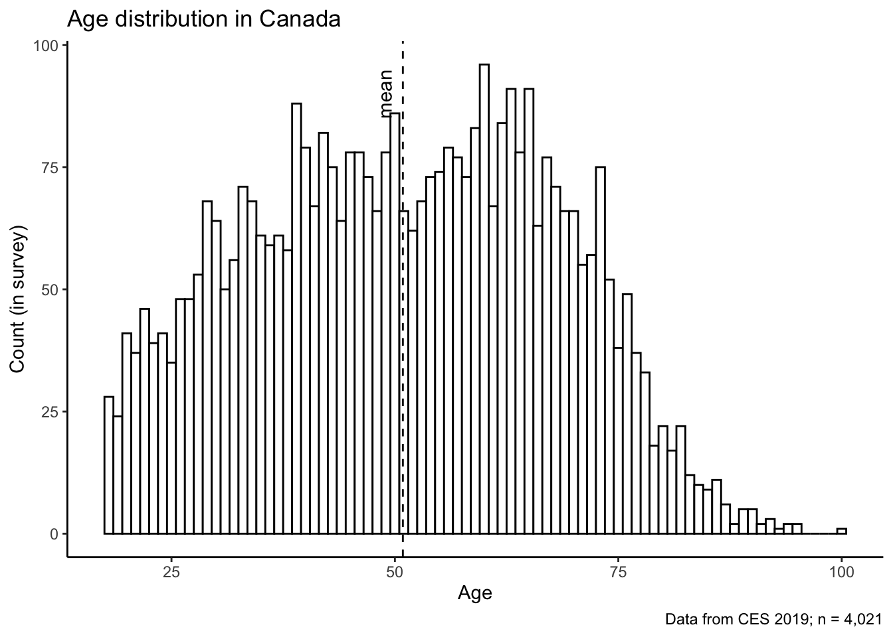
QUESTION: In your own words, how would you describe the distribution of age?
In the data, there’s a variable called age_range. Let’s look at it with group_by and count.
df |>
group_by(age_range) |>
count()# A tibble: 5 × 2
# Groups: age_range [5]
age_range n
<dbl+lbl> <int>
1 1 [(1) 18-24 years old] 256
2 2 [(2) 25-34 years old] 561
3 3 [(3) 35-44 years old] 694
4 4 [(4) 45-54 years old] 728
5 5 [(5) 55+ years old] 1782Let’s print the first five values of age_range. We see age_range is a labelled_double. That means the variable is a number, but it has a label associated with it. It’s similar to a factor: it’s a number with a label associated with it.
You can convert it to a factor like this:
df$age_range <- as_factor(df$age_range)Let’s look at the possible levels age_range can take.
levels(df$age_range)[1] "(-9) Don't know" "(-8) Refused" "(-7) Skipped"
[4] "(1) 18-24 years old" "(2) 25-34 years old" "(3) 35-44 years old"
[7] "(4) 45-54 years old" "(5) 55+ years old" QUESTION: How many missing values are there? (go back to the count() above ) How many Don’t know’s, Refused, Skipped? Why do you think this is the case? People could refuse to answer, it’s an option, so why are there none?
Now, plot age_range.
ggplot(df,aes(x=age_range)) +
geom_bar()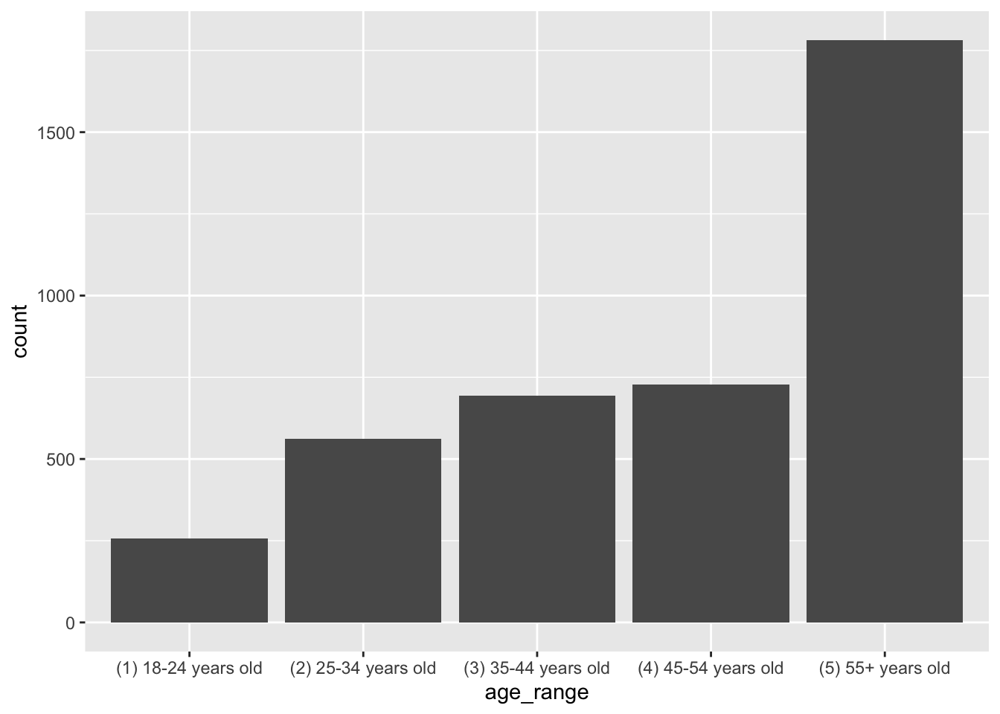
Now, imagine that these are not the groups you want. Rather, you want 18-34, 35-54, 55+. Recode the groups using the following code. You are using the cut() function.
df <- df |>
mutate(
age_group=cut(age,breaks=c(-Inf,17,34,54,Inf),
label=c("0-17","18-34","35-54","55+")),
age_group=droplevels(age_group))Plot this using a bar graph.
ggplot(df,aes(x=age_group)) +
geom_bar()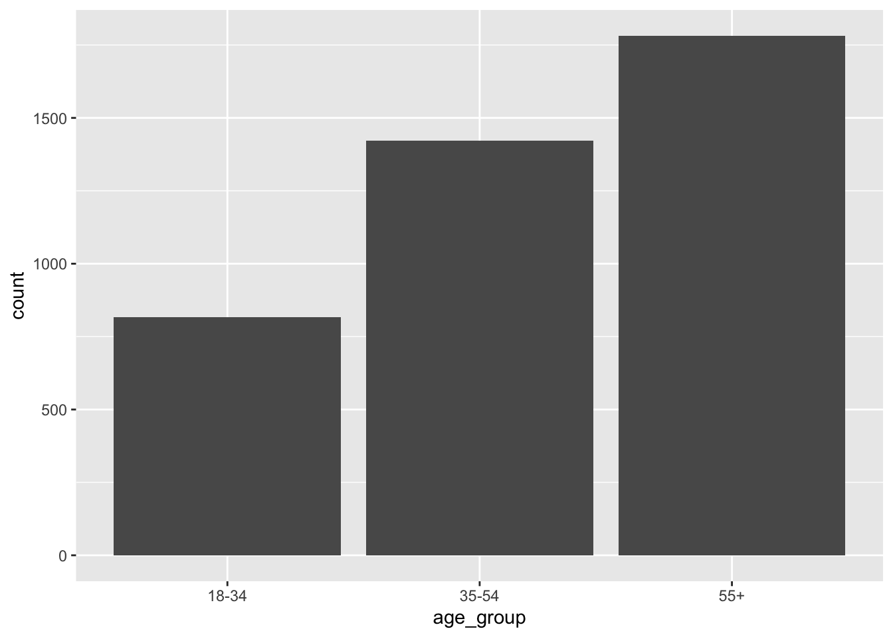
You can add labels with the count number like this.
ggplot(df, aes(x = age_group)) +
geom_bar() + labs(x = "", y = "") +
geom_text(aes(label = after_stat(count)), stat = "count", vjust = 1.5, colour = "white")Let’s drop the empty levels from the age_range factor. You can use the recode() function if you want to recode (e.g. clean) them.
df <- df |>
mutate(age_range = droplevels(age_range))
df <- df |>
mutate(age_range=recode(age_range,
"(1) 18-24 years old"="18-24",
"(2) 25-34 years old"="25-34",
"(3) 35-44 years old"="35-44",
"(4) 45-54 years old"="45-54",
"(5) 55+ years old"="55+"))That can be plotted too.
ggplot(df,aes(x=age_range)) +
geom_bar() +
labs(x="",y="")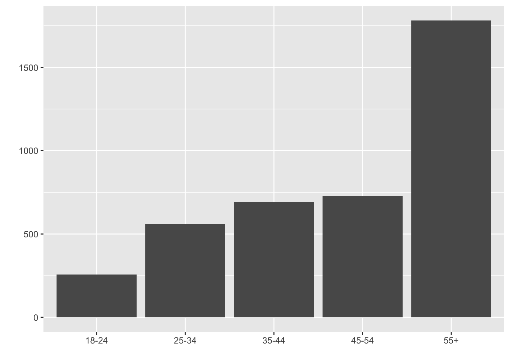
Lastly, instead of visualizing age with a graph, let’s use a table to get all the summary statistics. Use kable() to output these numbers.
age_summary <- df |>
summarize(
mean_age = mean(age, na.rm = TRUE),
sd_age = sd(age, na.rm = TRUE),
min_age = min(age, na.rm = TRUE),
max_age = max(age, na.rm = TRUE),
median_age = median(age, na.rm = TRUE),
skew_age = skewness(age, na.rm = TRUE),
kurtosis_age = kurtosis(age, na.rm = TRUE),
n_age = sum(!is.na(age))
)
age_summary |>
kable(format = "simple") | mean_age | sd_age | min_age | max_age | median_age | skew_age | kurtosis_age | n_age |
|---|---|---|---|---|---|---|---|
| 50.89033 | 16.83581 | 18 | 100 | 51 | -0.0053535 | -0.871748 | 4021 |
age_summary |>
t() |>
kable(format = "simple") | mean_age | 50.8903258 |
| sd_age | 16.8358082 |
| min_age | 18.0000000 |
| max_age | 100.0000000 |
| median_age | 51.0000000 |
| skew_age | -0.0053535 |
| kurtosis_age | -0.8717480 |
| n_age | 4021.0000000 |
QUESTION: What’s the mean/sd/min/max/median/skewnewss/kurtosis? Interpret the skewness and kurtosis?
QUESTION: t() function stands for transpose. What does t() do in practice?
Now, let’s look at the variable household income.
summary(df$q69) Min. 1st Qu. Median Mean 3rd Qu. Max.
-9 0 60000 80331 120000 2120000 Looking at the codebook, we see that -8 and -9 should be coded as NA.
df <- df |>
mutate(hincome=ifelse(q69 %in% c(-8,-9), NA, q69))ggplot(df,aes(x=hincome)) +
geom_histogram(binwidth = 5000)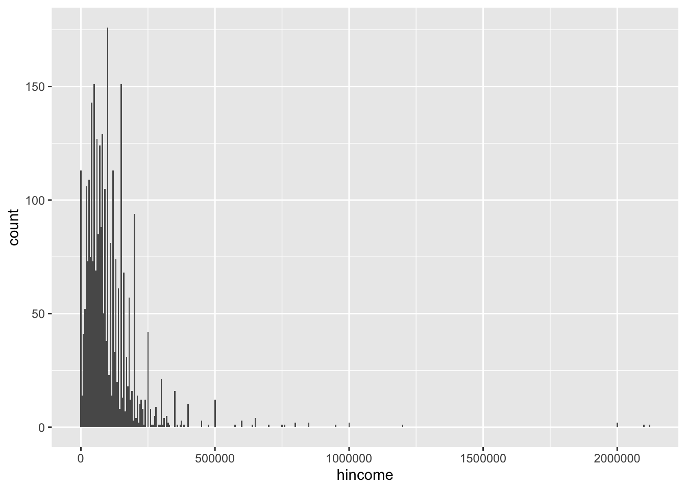
It’s sort of annoying that the data is all clustered to the left because of those “1%” rich outliers. Let’s zoom in. Let’s also pick bins of 1000.
ggplot(df,aes(x=hincome)) +
geom_histogram(binwidth = 1000) +
coord_cartesian(xlim=c(0,500000)) +
scale_x_continuous(breaks=seq(0,500000,by=100000),labels=c("0","100k","200k","300k","400k","500k"))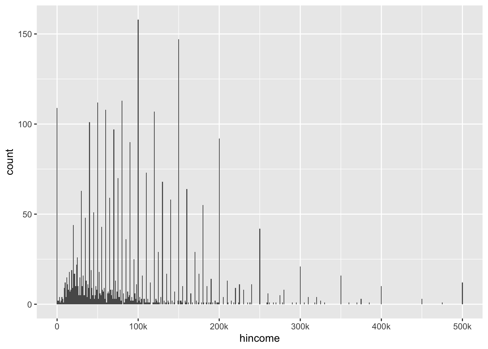
QUESTION: What do you notice? What’s the shape of the distribution? Why the weird spikes?
QUESTION: By copy and pasting the code above for the summary table using kable() try to replicate the statistical analysis but on household income instead of age. Comment very briefly.
QUESTION: Now on to another variable. Check q11 and q12 in the codebook. What are those variables?
Take a look at these three frequency tables.
df |>
group_by(q11) |>
count()# A tibble: 13 × 2
# Groups: q11 [13]
q11 n
<dbl+lbl> <int>
1 -9 [(-9) Don't know / Undecided] 923
2 -8 [(-8) Refused] 235
3 1 [(1) Liberal (Grits)] 909
4 2 [(2) Conservatives (Tory, PCs, Conservative Party of Canada)] 980
5 3 [(3) NDP (New Democratic Party, New Democrats, NDPers)] 405
6 4 [(4) Bloc Québécois (BQ, PQ, Bloc, Parti Québécois)] 98
7 5 [(5) Green Party (Greens)] 287
8 6 [(6) People's Party] 49
9 7 [(7) Other] 24
10 8 [(8) Will not vote] 1
11 9 [(9) None of these] 17
12 10 [(10) Will spoil ballet] 9
13 NA 84df |>
group_by(q12) |>
count()# A tibble: 11 × 2
# Groups: q12 [11]
q12 n
<dbl+lbl> <int>
1 -9 [(-9) Don't know] 424
2 1 [(1) Liberal (Grits)] 156
3 2 [(2) Conservatives (Tory, PCs, Conservative Party of Canada)] 97
4 3 [(3) NDP (New Democratic Party, New Democrats, NDPers)] 81
5 4 [(4) Bloc Québécois (BQ, PQ, Bloc, Parti Québécois)] 17
6 5 [(5) Green Party (Greens)] 70
7 6 [(6) People's Party] 10
8 7 [(7) Other] 18
9 8 [(8) Will not vote] 1
10 9 [(9) None of these] 49
11 NA 3098df |>
group_by(q11,q12) |>
count() |>
pivot_wider(names_from = q11,values_from = n)# A tibble: 11 × 14
# Groups: q12 [11]
q12 `-9` `-8` `1` `2` `3` `4` `5` `6` `7` `8` `9`
<dbl+lbl> <int> <int> <int> <int> <int> <int> <int> <int> <int> <int> <int>
1 -9 [(-9) D… 424 NA NA NA NA NA NA NA NA NA NA
2 1 [(1) Li… 156 NA NA NA NA NA NA NA NA NA NA
3 2 [(2) Co… 97 NA NA NA NA NA NA NA NA NA NA
4 3 [(3) ND… 81 NA NA NA NA NA NA NA NA NA NA
5 4 [(4) Bl… 17 NA NA NA NA NA NA NA NA NA NA
6 5 [(5) Gr… 70 NA NA NA NA NA NA NA NA NA NA
7 6 [(6) Pe… 10 NA NA NA NA NA NA NA NA NA NA
8 7 [(7) Ot… 18 NA NA NA NA NA NA NA NA NA NA
9 8 [(8) Wi… 1 NA NA NA NA NA NA NA NA NA NA
10 9 [(9) No… 49 NA NA NA NA NA NA NA NA NA NA
11 NA NA 235 909 980 405 98 287 49 24 1 17
# ℹ 2 more variables: `10` <int>, `NA` <int>So, given this, if we want to merge these two variables, we should start with q12, and if q12 is NA, then put q11. This can be done using the coalesce() function. Think of two columns in excel. Column A and column B. coalesce(a,b) creates a new variable equal to a if a is not missing and equal to b if b is missing.
Specifically, we are coalescing q12 and q11 so that when q12 is missing q11 is used. Equivalently, we could check if q11 = “(-9) Don’t know / Undecided” and put values from q12 in using the ifelse() function.
In other words, for those who said “(-9) Don’t know / Undecided”, we want to plug in their answer to the follow asking “Is there a party you are leaning to?”
df <- df |>
mutate(vote_coalesced = coalesce(q12,q11))QUESTION: This returns an error message. It’s not the end of the world, nothing breaks but we should understand why. Can you identify why? You can print the labels by doing df$q11 and df$q12.
Let’s clean this variable. You can use what we call a named vector with the recode function.
Recode is neat. If for instance you wanted to remove the Refused and Skipped, you could replace the “OTH” there by NA.
Note that in recode, the syntax is “old value”=“new value”. This is different than usually. Usually (e.g. using mutate) syntax is “new value”=“old value”.
When you use a function for the first time, make sure you read the help file or copy paste code using that function from a trusted resource (e.g. a stackoverflow answer with a lot of up votes).
df <- df |>
mutate(vote_coalesced=as_factor(vote_coalesced))
my_cleaning_mapping <- c("(-9) Don't know"="DK",
"(-8) Refused"="OTH",
"(-7) Skipped"="OTH",
"(1) Liberal (Grits)"="LIB",
"(2) Conservatives (Tory, PCs, Conservative Party of Canada)"="CONS",
"(3) NDP (New Democratic Party, New Democrats, NDPers)"="NDP",
"(4) Bloc Québécois (BQ, PQ, Bloc, Parti Québécois)"="BQ",
"(5) Green Party (Greens)"="GRN",
"(6) People's Party"="PPC",
"(7) Other"="OTH",
"(8) Will not vote"="OTH",
"(9) None of these"="OTH",
"(10) Will spoil ballet"="OTH",
"(-9) Don't know / Undecided"="DK")
df <- df |>
mutate(
vote_clean=recode(vote_coalesced,!!!my_cleaning_mapping)
)When you are going to plot this, it’s nice if OTH and DK are at the end. You can set the factor levels like this.
df <- df |>
mutate(
vote_clean = factor(vote_clean,levels=c("LIB", "CONS", "NDP", "BQ", "GRN", "PPC","OTH","DK"))
)Plot this.
party_colors <- c("LIB"="red",
"CONS"="darkblue",
"NDP"="orange",
"BQ"="lightblue",
"GRN"="darkgreen",
"PPC"="purple",
"DK"="darkgrey",
"OTH"="grey")
df |>
count(vote_clean) |>
mutate(prop = n / sum(n)) |>
ggplot(aes(x = vote_clean, y = prop, fill = vote_clean)) +
geom_bar(stat = "identity") +
scale_fill_manual(values=party_colors) +
scale_y_continuous(limits=c(0,0.35))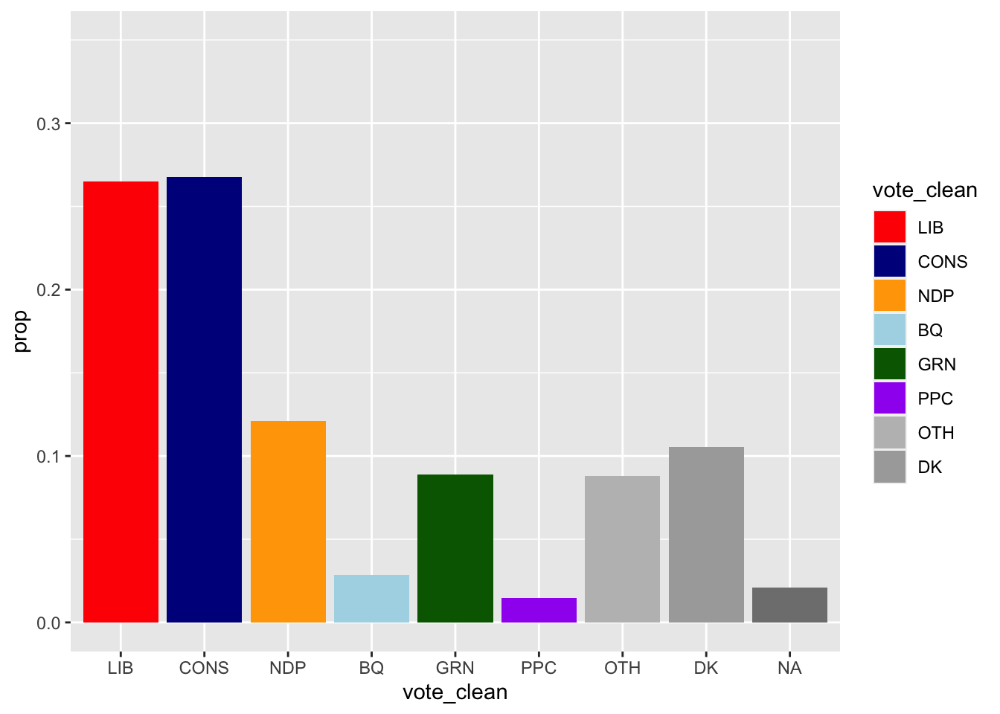
QUESTION Given what you know about the 2019 election (or using Wikipedia), does this distribution appear reasonable?
Up to now, we’ve looked at two continuous variable (age and household income) and one nominal categorical variable (vote intention).
Let’s look at another categorical variable, this time an ordered categorical variable.
Q46 asks: Do you strongly agree, somewhat agree, somewhat disagree, or strongly disagree with the following statement: “Justin Trudeau kept the election promises he made in 2015.”
ggplot(df,aes(x=q46)) +
geom_bar()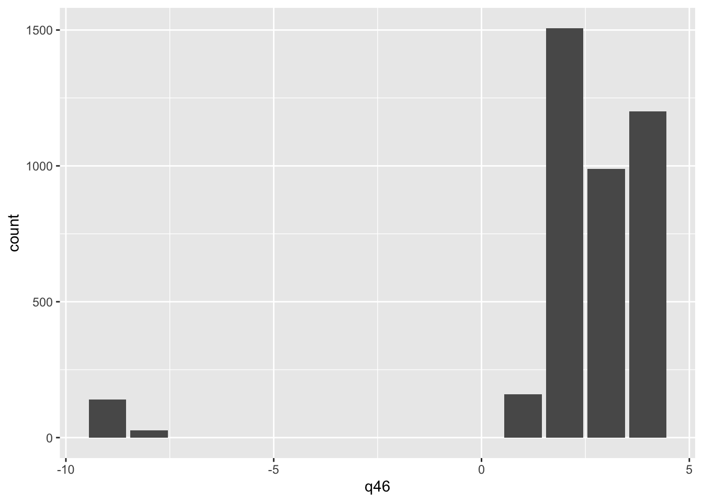
Let’s clean it like this:
df$q46 <- as_factor(df$q46)
my_cleaning_mapping <- c(
"(-9) Don't know"="Don't know",
"(-8) Refused"=NA,
"(-7) Skipped"=NA,
"(1) Strongly agree"="Strongly agree",
"(2) Somewhat agree"="Somewhat agree",
"(3) Somewhat disagree"="Somewhat disagree",
"(4) Strongly disagree"="Strongly disagree"
)
df <- df |>
mutate(q46=recode(q46,!!!my_cleaning_mapping),
q46=factor(q46,levels=c("Strongly disagree","Somewhat disagree",
"Somewhat agree","Strongly agree","Don't know")),
q46=droplevels(q46))
df <- df %>%
mutate(q46 = recode(q46, !!!my_cleaning_mapping),
q46 = factor(q46, levels=c("Strongly disagree", "Somewhat disagree",
"Somewhat agree", "Strongly agree", "Don't know")))Let’s plot it again.
ggplot(df,aes(x=q46)) +
geom_bar()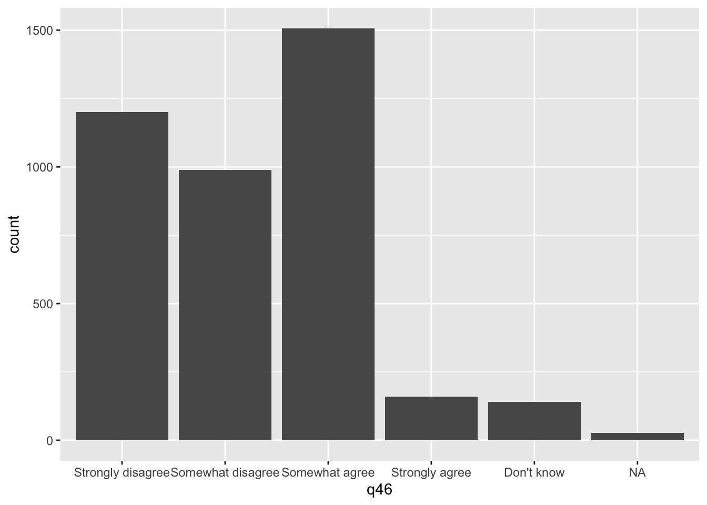
Note that in the social science, an ordinal categorical variable is often be converted to numeric. Here, you would have Strongly disagree becomes 1, Somewhat disagree becomes 2, Somewhat agree becomes 3. Strongly agree becomes 4. Note, “lowest / disagree” always come first: we want the numeric scale from “less/disagree” to “more/agree. You also have to decide what to do with the DK. You could drop them (put NAs or code them as 2.5 (middle of scale).
Up to now, we did univariate analysis on age, household income, vote intention and q46 (a question asking if Trudeau held his promises).
Bivariate analysis
Now, let’s do bivariate analysis. We will cover this more in the next weeks.
When doing bivariate analysis, you look at the distribution of two variables against each other. Bivariate analysis will be different depending on variable type. This is discussed in the book. You can have:
1 - two continuous variables
2 - one continuous variable and one categorical variable
3 - two categorical variables
Let’s explore the three possibilities in turn.
1 - two continuous variables
This is, in a way, the simplest case. We’ve all seen scatterplots. In the book, they look at carat and price.
Let’s plot age on x and household income on y.
ggplot(df,aes(x=age,y=hincome)) +
geom_point()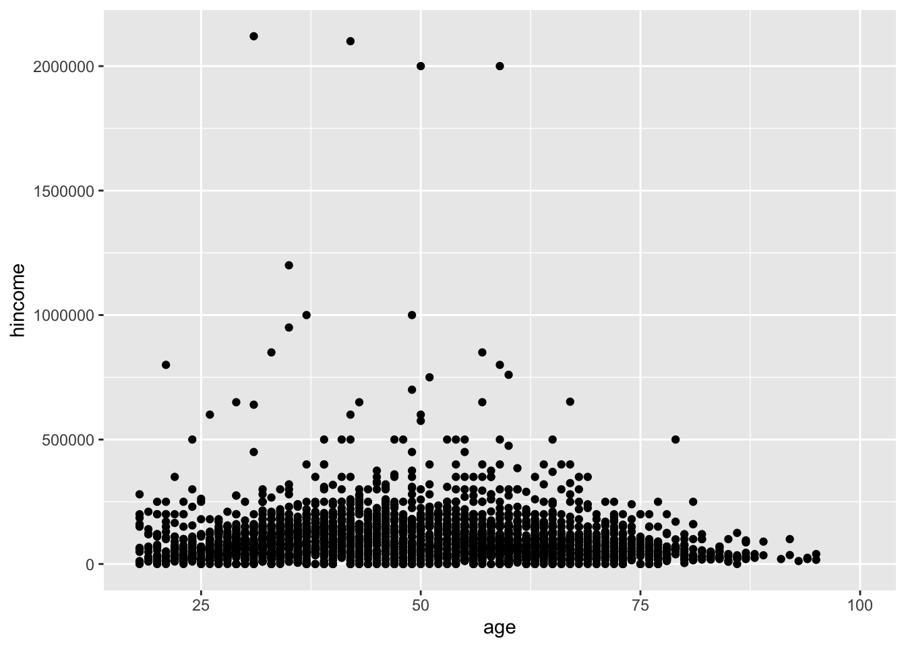
All the points are clustered on top of each other and we don’t see much. You can use “alpha” to play with the opacity. Where many points overlap the color will be darker. Where not many points overlap the color will be lighter. This way, you see where the density is.
ggplot(df,aes(x=age,y=hincome)) +
geom_point(alpha=0.1)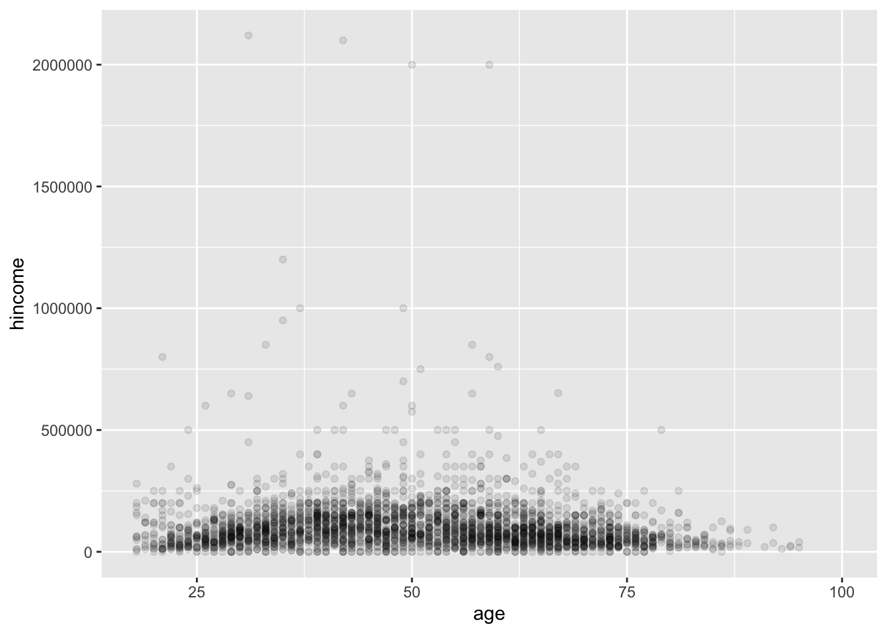
In the social sciences, we often ask questions of the type: “who’s richer, the young or the old”. One (extremely naive) way to ask this question is to fit a linear model where income = b0 + b1 * age + error. You’ll see details of this in the sequel to this class. In other words, you ask: when age increases, does household income increase or decrease (or stays the same). You can fit that straight line using a linear model “lm” smooth.
ggplot(df,aes(x=age,y=hincome)) +
geom_point(alpha=0.1) + geom_smooth(method="lm", se=FALSE)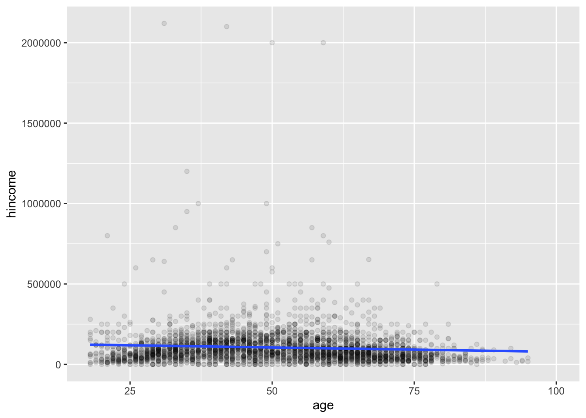
This suggests that income decreases with age. But, you can notice that this fit is terrible. Looking at the data, it actually seems that income first increases and then decreases with age.
Fitting a straight line is what we call a linear model of degree 1.
We can fit, instead, a local regression. The idea is that instead of having one straightline, you have many local straightlines so the line “moves”. This captures non-linearities.
ggplot(df,aes(x=age,y=hincome)) +
geom_point(alpha=0.1) + geom_smooth(se=FALSE)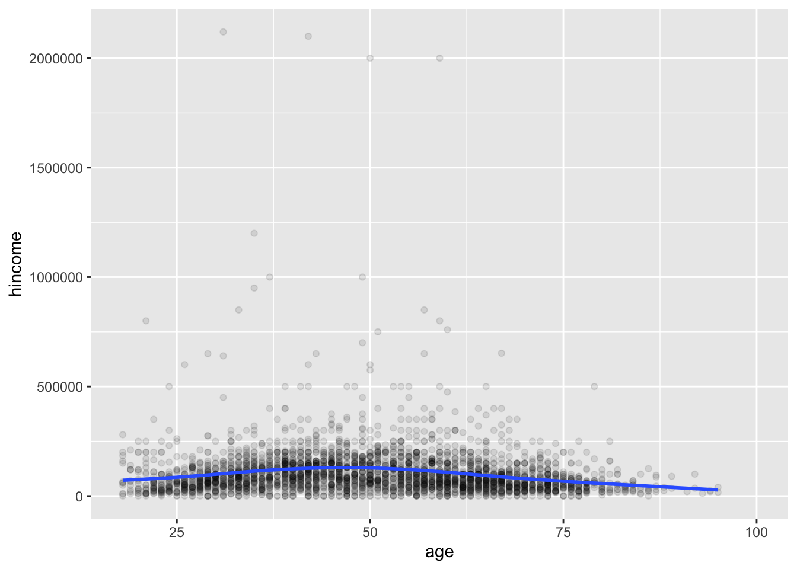
This seems more reasonable, though this statistical model still seems to be poor in the sense that you probably do not explain a lot of the variation in household income using only one variable (age). For now, that’s enough for two continuous variables. More on this next semester.
2 - one continuous variable and one categorical variable
One good way to visualize the relation between one continuous variable and one categorical variable is the boxplot.
ggplot(data = df, mapping = aes(x = vote_clean, y = hincome)) +
geom_boxplot()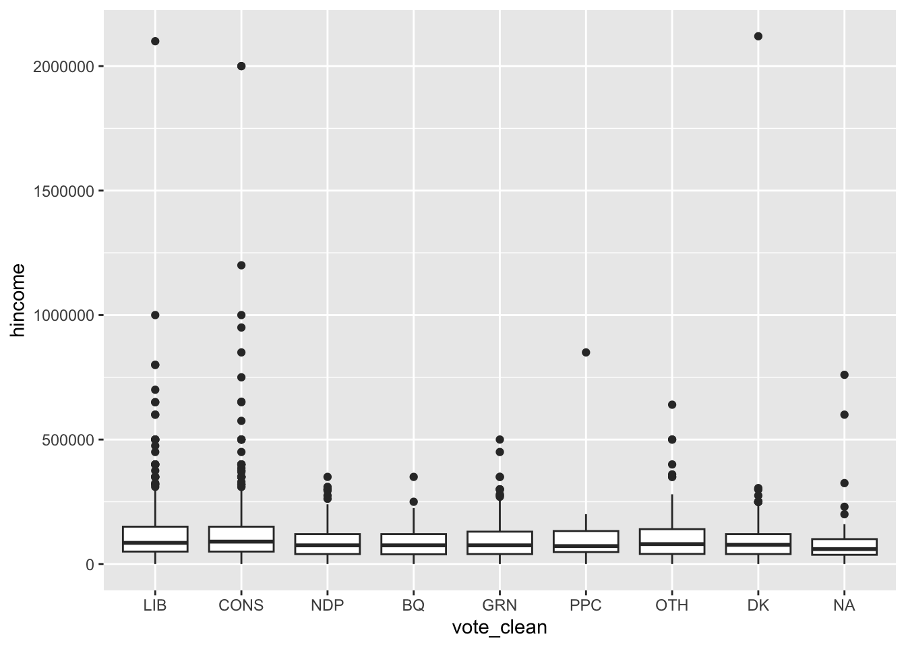
Above, we see the outliers really well, but the bottom is a bit clustered and hard to read. Let’s try to transform the y axis using a square root transformation.
ggplot(data = df, mapping = aes(x = vote_clean, y = hincome)) +
geom_boxplot() +
scale_y_sqrt(breaks=c(0,25000,50000,100000,500000,1000000,2000000))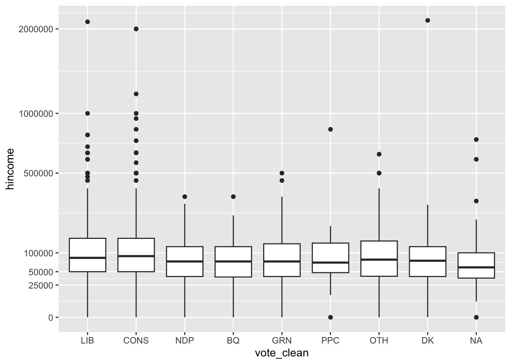
Better, we still hard to read. Let’s just cut off the rich above 250,000 so we see clearly the distribution of the normal folks.
ggplot(data = df, mapping = aes(x = vote_clean, y = hincome)) +
geom_boxplot() + coord_cartesian(ylim = c(0,250000))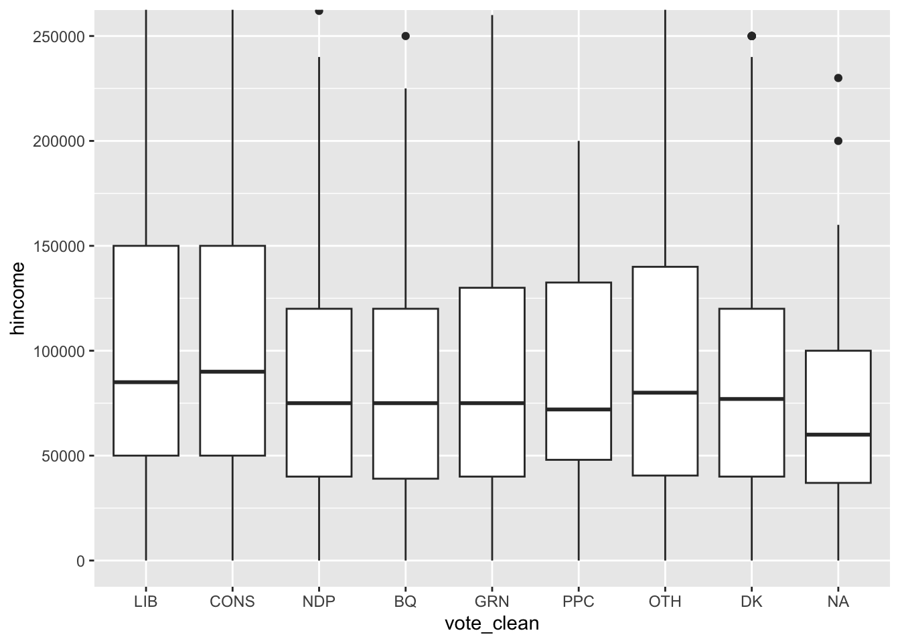
QUESTION How would you interpret these findings from those three boxplots?
3 - two categorical variables
In the book, they use geom_count().
ggplot(data = df) +
geom_count(mapping = aes(x = vote_clean, y = q46))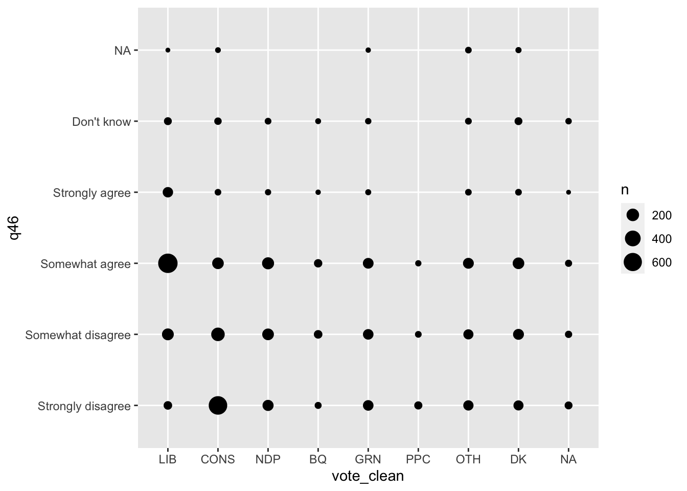
This is interesting in the sense that we that many liberals think Trudeau held is promises and many conservatives think he did not.
In the social sciences, what we usually want to know is: “how many % of liberals think he did”, “how many % of conservatives think he did” etc. The simplest way to do this is as follow:
df |>
group_by(vote_clean,q46) |>
count() |>
group_by(vote_clean) |>
mutate(percent=100*n/sum(n)) |>
ggplot(aes(x=q46,y=percent,fill=vote_clean)) +
geom_bar(position="dodge",stat="identity") +
geom_text(aes(label=round(percent)),position=position_dodge(width=0.9),vjust=-0.1)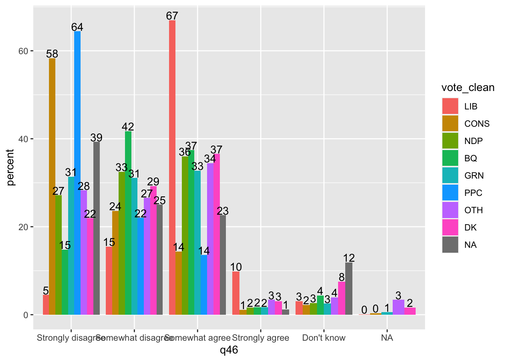
QUESTION If you focus on the NDP, the Conservatives and the Liberal only (ignore the other parties/choices), for each party, how many % of respondents agree Trudeau his promises (agree = strongly agree + somewhat agree)?
Section 2 - Your turn
Pick two variables of your choice. The variables can be in this dataset, or they can be in another dataset of your choice. The variables can be continuous or categorical.
Describe in a few words the variables you picked.
Make three figures. The first two figures are univariate analyses of your two variables (bar chart if categorical, histogram if continuous). Add informative figure captions (see R4DS 29.6.2). There’s also an example above in the first figure in this document.
The third figure should depict the two variables together (bivariate analysis). This is not something we’ve explicitly covered in the class yet but you should be able to adapt the code from above.
If you two variables are continuous, you can use geom_point() and identify x and y.
If your two variables are categorical, you can imitate the analysis above where we breakdown q46 by vote.
If one variable is continuous and one variable is categorical you can replicate the boxplot analysis.
Very succinctly, comment each figure.